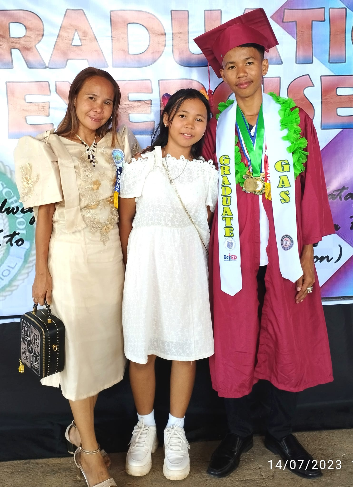

Academic Excellence
- Dean’s List, Freshman Year (Previous School, 2023–2024)
- Graduated with High Honors as Salutatorian, Senior High School (2022)
- Consistent Honor Student, Elementary to Junior High School (2009–2020)
- Salutatorian, Preschool (2008–2009)
Leadership Experience
- Creative Staff, COECS LGU – 2025 (Present)
- Committee Head, Quiz Bowl – 2025
- Raffle Committee Head, Volunteer – 2025
- Volunteer, LiveFest Hugyaw – 2025
- Outreach Volunteer, TipTip Elementary School – 2025
- Assistant Chess Committee Head, HNU Chess Intramurals – 2024
- Member, Scholars’ Society – 2024
- First-Year Representative (Previous School) – 2023-2024
- Public Information Officer (PIO), Senior High School Student Government (SSG) – 2022–2023
- Gazette Staffer – 2021–2023
- Classroom Officer, Senior High School – 2021–2023
- Representative, Senior High School SSG – 2021–2022
- Representative, Junior High School SSG – 2017–2019
- Public Information Officer (PIO), Elementary SSG – 2015–2016
Seminars and Events Attended
- Project Green Horizon
- Youth Congress Seminar – 2025
- U4U Seminar – 2024
- Teenage Pregnancy Seminar – 2024
- DICT Start-Up Caravan – 2024
- Mental Health Symposium – 2024
- Drug Awareness Symposium – 2024
- Teenage Pregnancy Symposium – 2024
- Pagpa-Ambit Gender-Based Violence and Mental Health Awareness Seminar – 2023
Achievements & Awards
- Alma Fest Debate Champion – 2025
- HNU Chess Intramurals – 3rd Place – 2024
- Impromptu Speaking – 3rd Place – 2023
- PRISAA Chess Player – 2023
- CET Days Chess Champion – 2023
- JHS–SHS Student-Athlete (2016–2023)
- Gov. Erico Aristotle Aumentado Leadership Award – 2023
- Gov. Erico Aristotle Aumentado Academic Excellence Award – 2023
- Best in Research – 2023
- Best in Work Immersion – 2023